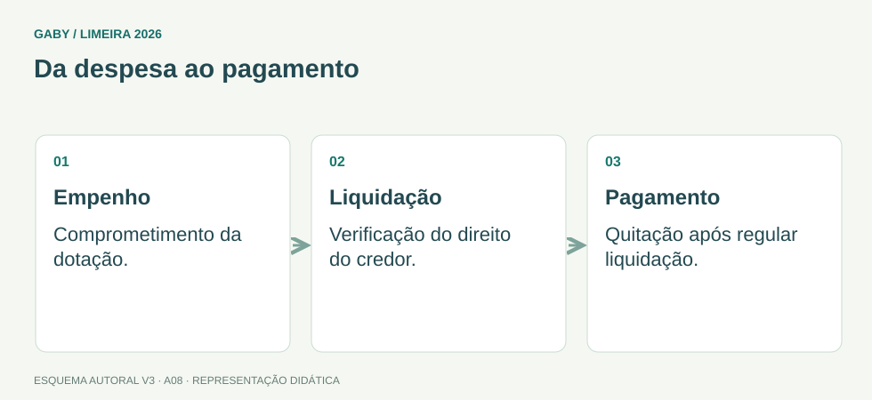

Objetivos do módulo
- Montar previsões simples de gastos.
- Distinguir previsão, realizado e saldo.
- Entender lógica básica de prestação de contas e documentação comprobatória.
- Situar PPA, LDO e LOA, as etapas do ciclo orçamentário e os prazos do ADCT.
- Reconhecer, na Lei 4.320/1964, os princípios orçamentários, as categorias e os estágios da receita e da despesa.
- Diferenciar Restos a Pagar, despesas de exercícios anteriores, dívida ativa, créditos adicionais, adiantamento e fundo especial.
- Identificar quem controla e quem presta contas (Lei 4.320/1964, Constituição e LRF) e o que cada balanço demonstra.
- Calcular variação, percentual de execução, saldo de dotação, limite de pessoal, superávit financeiro e preço médio ponderado.
Da despesa ao pagamento

Descrição em texto do esquema
- Empenho: Comprometimento da dotação.
- Liquidação: Verificação do direito do credor.
- Pagamento: Quitação após regular liquidação.
Oficina visual · aplique o esquema
Um orçamento era R$ 2.000 e o gasto foi R$ 1.700. Qual o saldo e qual o percentual utilizado?
Atividade autoral complementar da V3. Registre sua resposta; a resolução está no arquivo de gabarito e revisão.
Mapa do conteúdo
- 1. Levantamento de dados
- 2. Previsão de materiais
- 3. Gastos com pessoal
- 4. Previsto x realizado
- 5. Prestação de contas
- 6. Conferência
- 7. Planejamento e ciclo orçamentário
- 8. Lei 4.320/1964: princípios e exercício financeiro
- 9. Receita pública: categorias, estágios e dívida ativa
- 10. Despesa pública: classificação e estágios
- 11. Restos a Pagar, exercícios anteriores e anulação
- 12. Créditos adicionais
- 13. Adiantamento e fundos especiais
- 14. Controle e tomada de contas
- 15. Contabilidade, balanços e avaliação de bens
- 16. LRF: relatórios e transparência
1. Levantamento de dados
Antes de prever gastos, identifique quantidades, preços, periodicidade e histórico. Um cálculo simples pode ser “quantidade × custo unitário × número de períodos”. A qualidade da previsão depende da qualidade dos dados.
2. Previsão de materiais
Consumo médio ajuda a estimar necessidade, mas deve ser ajustado por eventos sazonais, mudança de demanda, estoque existente e tempo de reposição. Previsão não é certeza: é estimativa fundamentada.
3. Gastos com pessoal
Em questões básicas, podem aparecer multiplicações de quantidade de pessoas, valores e períodos. Na prática, gastos de pessoal têm componentes legais adicionais; o edital pede noções e cálculos básicos, portanto foque na estrutura do cálculo apresentado. Exemplo: 12 servidores temporários com remuneração mensal de R$ 2.100, por 6 meses, custam 12 × 2.100 × 6 = R$ 151.200.
Despesa total com pessoal na LRF
A Constituição, no art. 169, manda que a despesa com pessoal ativo, inativo e pensionistas respeite limites fixados em lei complementar. Essa lei é a Lei de Responsabilidade Fiscal (LRF, Lei Complementar 101/2000), que vale para União, Estados, Distrito Federal e Municípios.
| Dispositivo | O que determina | Como cai |
|---|---|---|
| LRF, art. 18, caput | Define despesa total com pessoal: soma dos gastos do ente com ativos, inativos e pensionistas, relativos a mandatos eletivos, cargos, funções ou empregos, civis, militares e de membros de Poder, com qualquer espécie remuneratória (vencimentos, vantagens, subsídios, proventos, pensões, adicionais, gratificações, horas extras), mais encargos sociais e contribuições previdenciárias pagas pelo ente. | O conceito é amplo. O tipo de vínculo (efetivo, comissionado, empregado público, agente político) não tira o gasto da conta. |
| LRF, art. 18, §1º | Contratos de terceirização de mão de obra que substituem servidores e empregados públicos são contabilizados como “Outras Despesas de Pessoal”. | Terceirizar para substituir servidor não esconde a despesa. |
| LRF, art. 18, §2º | A apuração soma a despesa do mês de referência com a dos 11 meses anteriores, pelo regime de competência, independentemente de empenho (redação da LC 178/2021). | O período é de 12 meses móveis, não o ano civil. |
| LRF, art. 18, §3º | Considera-se a remuneração bruta do servidor, sem deduções ou retenções, ressalvado o corte pelo teto do art. 37, XI, da Constituição (incluído pela LC 178/2021). | Bruto, e não líquido. |
| LRF, art. 19 | Limite global, em percentual da receita corrente líquida (RCL): União 50%; Estados 60%; Municípios 60%. O §1º lista o que não entra na verificação do limite, como indenização por demissão e incentivos à demissão voluntária. | Cobrança direta dos percentuais; as exclusões são só as que a lei lista. |
| LRF, art. 20, III | No Município, os 60% se repartem em 6% para o Legislativo (incluído o Tribunal de Contas do Município, quando houver) e 54% para o Executivo. | 54% + 6% = 60%. |
| LRF, art. 22 | O cumprimento dos limites é verificado ao final de cada quadrimestre. Se a despesa passar de 95% do limite, o Poder ou órgão fica proibido, entre outras medidas, de conceder aumento, criar cargo e contratar hora extra, com as ressalvas da lei. | Atenção à base: são 95% do limite do Poder ou órgão, e não 95% da RCL. |
| LRF, art. 23 | Ultrapassado o limite, o excedente deve ser eliminado nos dois quadrimestres seguintes, pelo menos um terço no primeiro. | Prazo e proporção da recondução. |
A receita corrente líquida (LRF, art. 2º, IV) é a soma das receitas correntes, com as deduções que a lei indica, apurada no mês de referência e nos 11 anteriores.
Cálculo do limite percentual
Fórmulas: limite em reais = RCL × percentual do limite. Percentual apurado = despesa total com pessoal ÷ RCL × 100.
Exemplo: um Município tem RCL de R$ 250.000.000. O limite do Executivo é 54% × 250.000.000 = R$ 135.000.000. Se a despesa total com pessoal do Executivo for R$ 124.000.000, o percentual apurado é 124.000.000 ÷ 250.000.000 × 100 = 49,6%. Está abaixo dos 54% e também abaixo de 95% do limite (0,95 × 135.000.000 = R$ 128.250.000).
4. Previsto x realizado
Comparar previsto e realizado identifica desvios. Variação absoluta = realizado−previsto; percentual = variação/previsto×100%. Desvio deve ser analisado, não automaticamente considerado erro.
Fórmulas de acompanhamento
| Medida | Fórmula | Exemplo conferido |
|---|---|---|
| Variação absoluta | realizado − previsto | Previsto R$ 8.000 e realizado R$ 7.400: 7.400 − 8.000 = −R$ 600 (gastou-se menos). |
| Variação percentual | variação absoluta ÷ previsto × 100 | −600 ÷ 8.000 × 100 = −7,5%. |
| Percentual de execução | realizado ÷ previsto × 100 | 7.400 ÷ 8.000 × 100 = 92,5%. |
| Dotação atualizada | dotação inicial + créditos adicionais − anulações | R$ 120.000 + R$ 30.000 − 0 = R$ 150.000. |
| Saldo de dotação | dotação atualizada − valor empenhado | R$ 150.000 − R$ 96.000 = R$ 54.000. |
| Execução da dotação | empenhado ÷ dotação atualizada × 100 | 96.000 ÷ 150.000 × 100 = 64%. |
O sinal da variação importa: positivo indica realizado acima do previsto; negativo, abaixo. A base do percentual é sempre o valor previsto. O saldo de dotação é o quanto ainda pode ser empenhado: cada empenho é deduzido do saldo da dotação (Lei 4.320/1964, art. 61) e nenhum empenho pode ultrapassar o crédito concedido (art. 59).
Essas colunas são as do Balanço Orçamentário descrito no Manual de Contabilidade Aplicada ao Setor Público (MCASP), do Tesouro Nacional. Nele, a dotação atualizada é a dotação inicial somada aos créditos adicionais abertos ou reabertos no exercício e às atualizações monetárias posteriores à publicação da LOA, deduzidas as anulações e os cancelamentos; o saldo da dotação é a dotação atualizada menos as despesas empenhadas; e considera-se despesa orçamentária executada a despesa empenhada.
5. Prestação de contas
Prestação de contas reúne registros e documentos para demonstrar origem, aplicação e resultado dos recursos/valores sob responsabilidade da unidade. Comprovantes devem ser íntegros, coerentes e vinculados ao fato registrado.
Quem deve prestar contas
A Constituição, no art. 70, parágrafo único, obriga a prestar contas qualquer pessoa física ou jurídica, pública ou privada, que utilize, arrecade, guarde, gerencie ou administre dinheiros, bens e valores públicos. O dever nasce de lidar com recurso público, e não do cargo ocupado: alcança o servidor que recebe um adiantamento e a entidade privada que recebe repasse.
Na Lei 4.320/1964, o art. 82 determina que o Poder Executivo preste contas ao Legislativo todo ano, e o art. 78 permite levantar ou tomar as contas dos responsáveis a qualquer tempo. Os dois níveis de controle estão detalhados na seção 14.
6. Conferência
Conferência aritmética, documental e de autorização reduz erros. Totais devem bater com subtotais e documentos; divergências precisam ser justificadas/corrigidas conforme procedimento.
7. Planejamento e ciclo orçamentário
PPA, LDO e LOA
O art. 165 da Constituição prevê três leis, todas de iniciativa do Poder Executivo: o plano plurianual (PPA), a lei de diretrizes orçamentárias (LDO) e a lei orçamentária anual (LOA). O texto do artigo se refere à União. A LRF, que obriga também Estados, Distrito Federal e Municípios (art. 1º, §2º), inclui os planos, orçamentos e leis de diretrizes orçamentárias entre os instrumentos de transparência de todos os entes (art. 48).
| Dispositivo | O que determina | Como cai |
|---|---|---|
| CF, art. 165, caput | Leis de iniciativa do Poder Executivo estabelecem o plano plurianual, as diretrizes orçamentárias e os orçamentos anuais. | A iniciativa é do Executivo; o Legislativo aprova. |
| CF, art. 165, §1º | O PPA estabelece, de forma regionalizada, diretrizes, objetivos e metas para as despesas de capital e outras delas decorrentes e para os programas de duração continuada. | Palavras-chave do PPA: diretrizes, objetivos e metas. |
| CF, art. 165, §2º | A LDO compreende as metas e prioridades da administração, fixa diretrizes de política fiscal, orienta a elaboração da LOA e dispõe sobre alterações na legislação tributária (redação da EC 109/2021). | Palavras-chave da LDO: metas e prioridades; orienta a LOA. |
| CF, art. 165, §5º | A LOA compreende o orçamento fiscal, o orçamento de investimento das empresas estatais e o orçamento da seguridade social. | Três orçamentos em uma só lei. |
| CF, art. 165, §8º | A LOA não contém matéria estranha à previsão da receita e à fixação da despesa, salvo autorização para créditos suplementares e para operações de crédito. | É o princípio da exclusividade. |
| CF, art. 165, §3º | O Executivo publica, até trinta dias após o encerramento de cada bimestre, relatório resumido da execução orçamentária. | Origem constitucional do RREO (seção 16). |
| CF, art. 166, caput e §3º | Os projetos do PPA, da LDO, da LOA e dos créditos adicionais são apreciados pelas duas Casas do Congresso Nacional. Emendas ao projeto da LOA só são aprovadas se forem compatíveis com o PPA e a LDO e indicarem os recursos necessários, admitidos apenas os provenientes de anulação de despesa (excluídas, entre outras, as dotações de pessoal e o serviço da dívida). | É a etapa de apreciação legislativa do ciclo. |
Prazos de envio dos projetos
O art. 35, §2º, do Ato das Disposições Constitucionais Transitórias (ADCT) fixa os prazos federais, que valem até a lei complementar prevista no art. 165, §9º, da Constituição.
| ADCT, art. 35, §2º | Envio pelo Executivo | Devolução para sanção |
|---|---|---|
| I — PPA | Até quatro meses antes do encerramento do primeiro exercício financeiro do mandato. | Até o encerramento da sessão legislativa. |
| II — LDO | Até oito meses e meio antes do encerramento do exercício financeiro. | Até o encerramento do primeiro período da sessão legislativa. |
| III — LOA | Até quatro meses antes do encerramento do exercício financeiro. | Até o encerramento da sessão legislativa. |
Como o exercício termina em 31 de dezembro, quatro meses antes correspondem a 31 de agosto. O PPA é enviado no primeiro ano do mandato e vigora até o fim do primeiro exercício do mandato seguinte. O dispositivo se refere ao mandato presidencial e aos projetos da União.
Vedações e regras dos arts. 167 a 169
| Dispositivo | O que determina | Como cai |
|---|---|---|
| CF, art. 167, I | Veda iniciar programas ou projetos não incluídos na LOA. | Sem previsão na LOA, não começa. |
| CF, art. 167, II | Veda realizar despesas ou assumir obrigações que excedam os créditos orçamentários ou adicionais. | Mesma lógica do art. 59 da Lei 4.320/1964. |
| CF, art. 167, V | Veda abrir crédito suplementar ou especial sem prévia autorização legislativa e sem indicação dos recursos correspondentes. | Dois requisitos: lei e fonte de recursos. |
| CF, art. 167, VI | Veda transposição, remanejamento ou transferência de recursos entre categorias de programação ou órgãos sem prévia autorização legislativa. | Mover dotação também exige lei. |
| CF, art. 167, VII | Veda conceder ou utilizar créditos ilimitados. | Todo crédito tem valor definido. |
| CF, art. 167, §1º | Investimento que ultrapasse um exercício só começa se estiver no PPA ou em lei que autorize a inclusão. | Liga a obra de vários anos ao PPA. |
| CF, art. 167, IX | Veda instituir fundos de qualquer natureza sem prévia autorização legislativa. | Fundo especial nasce de lei (seção 13). |
| CF, art. 168 | Os recursos dos Poderes Legislativo e Judiciário, do Ministério Público e da Defensoria Pública são entregues até o dia 20 de cada mês, em duodécimos. | Duodécimo = um doze avos da dotação anual. |
| CF, art. 169, caput | A despesa com pessoal ativo e inativo e pensionistas não pode exceder os limites de lei complementar, que é a LRF (redação da EC 109/2021). | Ponte para a seção 3. |
| CF, art. 169, §1º | Vantagem, aumento, criação de cargos, admissão ou contratação de pessoal só podem ocorrer com prévia dotação orçamentária suficiente e com autorização específica na LDO (ressalvadas empresas públicas e sociedades de economia mista). | Dois requisitos: dotação e LDO. |
Etapas do ciclo orçamentário
O ciclo orçamentário é a sequência de etapas pelas quais o orçamento passa, da concepção à avaliação final. O Glossário de Termos Orçamentários do Congresso Nacional lista as fases: elaboração da proposta, apreciação legislativa, execução, controle e avaliação.
| Etapa | Quem conduz | O que acontece |
|---|---|---|
| 1. Elaboração | Poder Executivo | Estima a receita, define prioridades e metas com base no PPA e na LDO e monta a proposta de lei. |
| 2. Apreciação legislativa (aprovação) | Poder Legislativo | Discute, emenda e vota o projeto (CF, art. 166), que volta ao Executivo para sanção. |
| 3. Execução | Órgãos e unidades | Arrecada a receita e realiza a despesa: empenho, liquidação e pagamento. |
| 4. Controle e avaliação | Controle interno e externo | Verifica a legalidade e avalia o cumprimento das metas e os resultados da gestão, quanto à eficácia e à eficiência (CF, art. 74, I e II). |
A avaliação tem base constitucional: o art. 74, I, da Constituição dá ao controle interno a finalidade de avaliar o cumprimento das metas previstas no plano plurianual e a execução dos programas de governo e dos orçamentos. Não confunda: liquidação é estágio da despesa; aprovação é a etapa legislativa; avaliação é a etapa que mede resultados.
8. Lei 4.320/1964: princípios e exercício financeiro
A Lei 4.320/1964 traz as normas gerais de direito financeiro para elaboração e controle dos orçamentos e balanços da União, dos Estados, dos Municípios e do Distrito Federal. É a norma central deste módulo. O texto oficial mantém a grafia de 1964 (“tôdas”, “nêle”); os trechos transcritos abaixo a preservam.
| Dispositivo | O que determina | Como cai |
|---|---|---|
| Lei 4.320/1964, art. 2º | A Lei de Orçamento discrimina receita e despesa de modo a evidenciar a política econômico-financeira e o programa de trabalho do governo, obedecidos os princípios de unidade, universalidade e anualidade. | Os três princípios nomeados na lei. |
| Lei 4.320/1964, art. 3º | O orçamento compreende todas as receitas, inclusive as de operações de crédito autorizadas em lei. | Universalidade, lado da receita. |
| Lei 4.320/1964, art. 4º | O orçamento compreende todas as despesas próprias dos órgãos do governo e da administração centralizada. | Universalidade, lado da despesa. |
| Lei 4.320/1964, art. 5º | A Lei de Orçamento não consigna dotações globais para atender indiferentemente a pessoal, material, serviços de terceiros, transferências ou outras despesas. | A despesa é autorizada em detalhe (especificação), não em bloco. |
| Lei 4.320/1964, art. 6º | Todas as receitas e despesas constam pelos seus totais, vedadas quaisquer deduções. É o orçamento bruto. | Não se mostra só o saldo líquido entre uma receita e uma despesa. |
| Lei 4.320/1964, art. 34 | O exercício financeiro coincide com o ano civil. | 1º de janeiro a 31 de dezembro; não é o mandato nem o ano letivo. |
| Lei 4.320/1964, art. 35, I | Pertencem ao exercício as receitas nele arrecadadas. | Tributo de ano anterior pago agora é receita do exercício atual. |
| Lei 4.320/1964, art. 35, II | Pertencem ao exercício as despesas nele legalmente empenhadas. | O critério da despesa é o empenho, não o pagamento. |
Como aplicar o orçamento bruto
Uma unidade arrecada R$ 50.000 em taxas e gasta R$ 12.000 com a cobrança. O orçamento registra receita de R$ 50.000 e despesa de R$ 12.000, e não uma receita “líquida” de R$ 38.000. O art. 6º, §1º, aplica a mesma ideia às cotas transferidas entre entes: a parcela aparece como despesa em quem transfere e como receita em quem recebe.
Como aplicar o art. 35
O art. 35 usa critérios diferentes para cada lado. A receita entra no exercício em que o dinheiro foi arrecadado. A despesa pertence ao exercício em que foi legalmente empenhada, ainda que o pagamento fique para o ano seguinte. O Manual Técnico de Orçamento (MTO 2026) chama o critério da receita de regime de caixa. Esse é o critério do orçamento; o reconhecimento patrimonial de direitos e obrigações segue as regras próprias da contabilidade.
9. Receita pública: categorias, estágios e dívida ativa
Categorias econômicas
O art. 11 da Lei 4.320/1964 (redação do Decreto-Lei 1.939/1982) classifica a receita em duas categorias econômicas: Receitas Correntes e Receitas de Capital.
| Categoria | O que reúne (art. 11, §§1º, 2º e 4º) | Exemplos |
|---|---|---|
| Receitas Correntes | Receita tributária, de contribuições, patrimonial, agropecuária, industrial, de serviços, transferências correntes e outras receitas correntes. | IPTU, taxas, aluguel de imóvel público. |
| Receitas de Capital | Operações de crédito, alienação de bens, amortização de empréstimos, transferências de capital e outras receitas de capital. | Empréstimo contratado, venda de um terreno. |
Outros pares, como “ordinárias e extraordinárias” ou “vinculadas e não vinculadas”, não são as categorias econômicas do art. 11.
Estágios da receita
Os estágios da receita são quatro, nesta ordem: previsão, lançamento, arrecadação e recolhimento (MTO 2026, item 3.3, e Glossário de Termos Orçamentários do Congresso Nacional).
| Estágio | O que é | Base |
|---|---|---|
| 1. Previsão | Estimativa do que se espera arrecadar, feita para a proposta orçamentária. Ainda não há ingresso de dinheiro. As previsões consideram, entre outros fatores, mudanças na legislação, inflação e crescimento econômico, com demonstrativo dos três anos anteriores e projeção para os dois seguintes. | LRF, art. 12 |
| 2. Lançamento | Ato da repartição competente que verifica a procedência do crédito fiscal e a pessoa devedora e inscreve o débito desta. São objeto de lançamento os impostos diretos e as rendas com vencimento determinado em lei, regulamento ou contrato. O MTO lembra que, pelo Código Tributário Nacional, o lançamento se aplica a impostos, taxas e contribuições de melhoria. | Lei 4.320/1964, art. 52 e art. 53 |
| 3. Arrecadação | O contribuinte ou devedor entrega o valor aos agentes arrecadadores ou às instituições financeiras autorizadas (os bancos autorizados da rede bancária). O agente fornece recibo com o nome de quem paga, a proveniência, a classificação, a data e a assinatura. | MTO 2026, item 3.3.3; Lei 4.320/1964, art. 55 |
| 4. Recolhimento | Os agentes arrecadadores transferem o valor arrecadado à conta do Tesouro, observado o princípio da unidade de tesouraria, vedada a fragmentação para criar caixas especiais. | Lei 4.320/1964, art. 56 |
Exemplo: a secretaria de finanças estima em R$ 900.000 a receita de uma taxa para o ano seguinte (previsão). No início do ano, calcula quanto cada contribuinte deve e emite os carnês (lançamento). O contribuinte paga o carnê na rede bancária (arrecadação). O banco repassa o dinheiro à conta do Tesouro municipal (recolhimento).
Nem toda receita passa pelos quatro estágios: o MTO cita a doação em espécie, que é arrecadada sem ter sido lançada. E o art. 57 manda classificar como receita orçamentária toda receita arrecadada, ainda que não prevista no orçamento.
Dívida ativa
| Dispositivo | O que determina | Como cai |
|---|---|---|
| Lei 4.320/1964, art. 39, caput | Os créditos da Fazenda Pública, tributários ou não, são escriturados como receita do exercício em que forem arrecadados (redação do Decreto-Lei 1.735/1979). | Coerente com o art. 35, I. |
| Lei 4.320/1964, art. 39, §1º | Créditos exigíveis pelo transcurso do prazo para pagamento são inscritos como Dívida Ativa, em registro próprio, na forma da legislação própria, depois de apurada a sua liquidez e certeza. | O vencimento torna o crédito exigível; a inscrição exige apurar liquidez e certeza. A lei não condiciona a inscrição à concordância do devedor. |
| Lei 4.320/1964, art. 39, §2º | Dívida Ativa Tributária vem de tributos e respectivos adicionais e multas. Dívida Ativa não Tributária reúne os demais créditos, como multas não tributárias, aluguéis, indenizações e restituições. | Classificar o crédito pela origem. |
10. Despesa pública: classificação e estágios
Categorias econômicas da despesa
O art. 12 da Lei 4.320/1964 divide a despesa em Despesas Correntes e Despesas de Capital, com as subdivisões abaixo. O art. 13 detalha os elementos de cada grupo.
| Categoria | Grupo | O que é (art. 12) |
|---|---|---|
| Despesas Correntes | Despesas de Custeio (§1º) | Dotações para manutenção de serviços anteriormente criados, inclusive obras de conservação e adaptação de bens imóveis. Exemplos do art. 13: pessoal, material de consumo, serviços de terceiros. |
| Despesas Correntes | Transferências Correntes (§2º) | Dotações para despesas sem contraprestação direta em bens ou serviços, inclusive contribuições e subvenções para manutenção de outras entidades. |
| Despesas de Capital | Investimentos (§4º) | Planejamento e execução de obras, aquisição de instalações, equipamentos e material permanente. |
| Despesas de Capital | Inversões Financeiras (§5º) | Aquisição de imóveis ou de bens de capital já em utilização; aquisição de títulos de capital de empresas já constituídas, sem aumento de capital. |
| Despesas de Capital | Transferências de Capital (§6º) | Dotações para investimentos ou inversões financeiras que outras pessoas devam realizar, e para amortização da dívida pública. |
Cuidado com a obra: reforma de conservação ou adaptação de um prédio que já existe é custeio (despesa corrente). Obra nova é investimento. Comprar um imóvel já pronto é inversão financeira (§5º, I), salvo o imóvel adquirido como necessário para realizar uma obra, que o §4º inclui nos investimentos.
Estágios da despesa
A despesa passa por três estágios, nesta ordem: empenho, liquidação e pagamento.
| Dispositivo | O que determina | Como cai |
|---|---|---|
| Lei 4.320/1964, art. 58 | Empenho é o ato de autoridade competente que cria para o Estado obrigação de pagamento, pendente ou não de implemento de condição. | É o empenho, e não a liquidação nem a ordem de pagamento, que cria a obrigação. |
| Lei 4.320/1964, art. 59, caput | O empenho não poderá exceder o limite dos créditos concedidos. | Aceite do fornecedor ou nota fiscal não ampliam o crédito. |
| Lei 4.320/1964, art. 59, §§1º e 2º | No último mês do mandato do prefeito, o Município não pode empenhar mais que o duodécimo da despesa prevista nem assumir compromissos para execução depois do mandato, salvo calamidade pública (§3º). | Regra específica para Municípios. |
| Lei 4.320/1964, art. 60, caput | É vedada a realização de despesa sem prévio empenho. | O empenho vem antes da despesa, sempre. |
| Lei 4.320/1964, art. 60, §1º | Em casos especiais previstos na legislação específica, pode ser dispensada a emissão da nota de empenho. | Dispensa-se o documento, nunca o empenho. |
| Lei 4.320/1964, art. 60, §2º | Faz-se por estimativa o empenho da despesa cujo montante não se possa determinar. | Contas de água, luz e telefone. |
| Lei 4.320/1964, art. 60, §3º | É permitido o empenho global de despesas contratuais e outras, sujeitas a parcelamento. | Aluguel ou contrato pago em parcelas mensais. |
| Lei 4.320/1964, art. 61 | Para cada empenho extrai-se a nota de empenho, que indica o nome do credor, a especificação e a importância da despesa e a dedução desta do saldo da dotação própria. | Quatro informações: credor, objeto, valor e dedução do saldo. |
| Lei 4.320/1964, art. 62 | O pagamento só é efetuado quando ordenado após a regular liquidação. | Não se paga antes de liquidar. |
| Lei 4.320/1964, art. 63, caput e §1º | Liquidação é a verificação do direito adquirido pelo credor, com base nos títulos e documentos comprobatórios. Apura: a origem e o objeto do que se deve pagar; a importância exata a pagar; a quem se deve pagar para extinguir a obrigação. | Três apurações. Existência de dotação é assunto do empenho. |
| Lei 4.320/1964, art. 63, §2º | Em fornecimentos e serviços, a liquidação tem por base o contrato, ajuste ou acordo; a nota de empenho; e os comprovantes da entrega do material ou da prestação efetiva do serviço. | Três documentos. Orçamento ou propaganda não comprovam entrega. |
| Lei 4.320/1964, art. 64 | Ordem de pagamento é o despacho de autoridade competente determinando que a despesa seja paga. Só pode ser exarada em documentos processados pelos serviços de contabilidade (parágrafo único). | É ato da autoridade, não pedido do credor. |
| Lei 4.320/1964, art. 65 | O pagamento é feito pelos meios regulares que a lei indica (tesouraria ou pagadoria e estabelecimentos bancários credenciados) e, em casos excepcionais, por meio de adiantamento. | Adiantamento é exceção (seção 13). |
Modalidades de empenho
Os nomes e definições abaixo são os do Glossário de Termos Orçamentários do Congresso Nacional.
| Modalidade | Quando se usa | Exemplo |
|---|---|---|
| Ordinário | Despesa com finalidade determinada e valor conhecido, com liquidação e pagamento de uma só vez. A Lei 4.320/1964 não usa esse nome: é o empenho comum, fora das hipóteses dos §§2º e 3º do art. 60. | Compra de 30 cadeiras com entrega única. |
| Por estimativa (art. 60, §2º) | O montante exato a pagar não pode ser determinado previamente. O glossário cita contas de água, luz, gás e telefone. | Consumo de energia elétrica do ano. |
| Global (art. 60, §3º) | Despesa com finalidade e valor determinados, mas com liquidação e pagamento em parcelas, normalmente mensais. | Contrato de limpeza de 12 parcelas mensais. |
Nenhuma modalidade de empenho cria dotação. Se não há crédito orçamentário para a despesa, a solução é um crédito adicional (seção 12), não um “empenho estimativo”.
Liquidação parcial
Como a liquidação apura a importância exata a pagar com base nos comprovantes de entrega (art. 63, §§1º e 2º), só se liquida o que foi efetivamente entregue. Exemplo: foram empenhadas 50 cadeiras a R$ 180, total de R$ 9.000. O fornecedor entregou 42. Liquida-se 42 × 180 = R$ 7.560. As 8 cadeiras restantes (8 × 180 = R$ 1.440) continuam empenhadas e não liquidadas até a entrega.
11. Restos a Pagar, exercícios anteriores e anulação
| Dispositivo | O que determina | Como cai |
|---|---|---|
| Lei 4.320/1964, art. 36 | Restos a Pagar são as despesas empenhadas mas não pagas até 31 de dezembro, distinguindo-se as processadas das não processadas. | Processadas: empenhadas e liquidadas. Não processadas: empenhadas e ainda não liquidadas (Decreto 93.872/1986, art. 67, §1º). |
| Lei 4.320/1964, art. 37 | Despesas de exercícios anteriores: podem ser pagas à conta de dotação específica do orçamento atual (a) despesas de exercícios encerrados que tinham crédito próprio com saldo suficiente e não foram processadas na época; (b) Restos a Pagar com prescrição interrompida; (c) compromissos reconhecidos após o encerramento do exercício. | Usa dotação do orçamento atual para obrigação de ano já encerrado. Na União, o Decreto 93.872/1986 (art. 69) permite pagar por essa dotação o que for reclamado depois de cancelada a inscrição em Restos a Pagar. |
| Lei 4.320/1964, art. 38 | A importância de despesa anulada no próprio exercício reverte à dotação. Se a anulação ocorrer após o encerramento do exercício, é considerada receita do ano em que se efetivar. | O momento da anulação define o tratamento. |
Como separar os Restos a Pagar
Em 31 de dezembro, uma unidade tem R$ 96.000 empenhados, dos quais R$ 81.000 liquidados e R$ 72.000 pagos.
- Restos a Pagar processados: liquidado − pago = 81.000 − 72.000 = R$ 9.000.
- Restos a Pagar não processados: empenhado − liquidado = 96.000 − 81.000 = R$ 15.000.
- Total: empenhado − pago = 96.000 − 72.000 = R$ 24.000, que confere com 9.000 + 15.000.
A inscrição depende ainda das demais regras aplicáveis ao ente. Despesa empenhada e não paga não se transforma em receita nem em crédito adicional: continua sendo despesa do exercício em que foi empenhada (art. 35, II).
Como aplicar o art. 38
Em agosto, cancela-se um empenho de R$ 3.000 do próprio ano: os R$ 3.000 voltam ao saldo da dotação e podem ser empenhados de novo. Se o cancelamento ocorrer em março do ano seguinte, o exercício daquela dotação já se encerrou: o valor é tratado como receita do ano em que a anulação se efetiva.
12. Créditos adicionais
O orçamento aprovado pode precisar de ajuste durante o ano. O art. 40 da Lei 4.320/1964 define créditos adicionais como as autorizações de despesa não computadas ou insuficientemente dotadas na Lei de Orçamento. São autorizações de despesa: não são receita, operação de crédito nem despesa a pagar.
| Espécie (art. 41) | Finalidade | Autorização e abertura | Exemplo |
|---|---|---|---|
| I — Suplementar | Reforço de dotação orçamentária que já existe. | Autorizado por lei e aberto por decreto executivo (art. 42). | A dotação de material de limpeza acabou em setembro e é reforçada. |
| II — Especial | Despesa para a qual não haja dotação orçamentária específica. | Autorizado por lei e aberto por decreto executivo (art. 42). | Programa novo, criado no meio do ano, sem dotação na LOA. |
| III — Extraordinário | Despesas urgentes e imprevistas, em caso de guerra, comoção intestina ou calamidade pública. | Aberto por decreto do Executivo, com imediato conhecimento ao Legislativo (art. 44). | Atendimento a desabrigados após enchente com calamidade reconhecida. |
| Dispositivo | O que determina | Como cai |
|---|---|---|
| Lei 4.320/1964, art. 43, caput | A abertura de créditos suplementares e especiais depende da existência de recursos disponíveis e é precedida de exposição justificativa. | Dois requisitos, qualquer que seja o valor do crédito. |
| Lei 4.320/1964, art. 43, §1º | Fontes de recursos, desde que não comprometidos: I — superávit financeiro apurado em balanço patrimonial do exercício anterior; II — excesso de arrecadação; III — anulação parcial ou total de dotações orçamentárias ou de créditos adicionais, autorizados em lei; IV — produto de operações de crédito autorizadas. | Quatro fontes. A disponibilidade tem de ser real. |
| Lei 4.320/1964, art. 43, §2º | Superávit financeiro é a diferença positiva entre o ativo financeiro e o passivo financeiro, conjugando-se ainda os saldos dos créditos adicionais transferidos e as operações de crédito a eles vinculadas. | Não é saldo bancário bruto nem receita apenas prevista. |
| Lei 4.320/1964, art. 43, §3º | Excesso de arrecadação é o saldo positivo das diferenças acumuladas mês a mês entre a arrecadação prevista e a realizada, considerando-se ainda a tendência do exercício. | Um mês bom, isolado, não basta. |
| Lei 4.320/1964, art. 43, §4º | Do excesso de arrecadação deduz-se o valor dos créditos extraordinários abertos no exercício. | Ajuste no cálculo do recurso utilizável. |
| Lei 4.320/1964, art. 45 | Os créditos adicionais vigoram no exercício em que forem abertos, salvo disposição legal em contrário quanto aos especiais e extraordinários. | Regra geral: até 31 de dezembro. |
| Lei 4.320/1964, art. 46 | O ato que abre o crédito indica a importância, a espécie e a classificação da despesa, até onde for possível. | Conteúdo do decreto de abertura. |
O que a Constituição acrescenta
- Art. 167, V: veda abrir crédito suplementar ou especial sem prévia autorização legislativa e sem indicação dos recursos correspondentes.
- Art. 167, §3º: o crédito extraordinário só é admitido para despesas imprevisíveis e urgentes, como as decorrentes de guerra, comoção interna ou calamidade pública. Falha de planejamento ou compra rotineira não se encaixam.
- Art. 167, §2º: créditos especiais e extraordinários autorizados nos últimos quatro meses do exercício podem ser reabertos no exercício seguinte, nos limites de seus saldos.
- Art. 165, §8º: a própria LOA pode autorizar a abertura de créditos suplementares.
Cálculo do superávit financeiro
Sem créditos transferidos nem operações de crédito vinculadas a ajustar: superávit financeiro = ativo financeiro − passivo financeiro, quando o resultado é positivo. Exemplo: ativo financeiro de R$ 480.000 e passivo financeiro de R$ 350.000 no balanço patrimonial do exercício anterior. Superávit financeiro = 480.000 − 350.000 = R$ 130.000.
Cálculo do excesso de arrecadação
| Mês | Previsto | Realizado | Diferença |
|---|---|---|---|
| Janeiro | R$ 200.000 | R$ 215.000 | +15.000 |
| Fevereiro | R$ 200.000 | R$ 190.000 | −10.000 |
| Março | R$ 200.000 | R$ 230.000 | +30.000 |
| Abril | R$ 200.000 | R$ 225.000 | +25.000 |
| Acumulado | R$ 800.000 | R$ 860.000 | +60.000 |
O saldo acumulado é 15.000 − 10.000 + 30.000 + 25.000 = R$ 60.000. Antes de usar esse valor, a lei manda considerar a tendência do exercício: se a arrecadação dos meses seguintes tende a cair, o recurso disponível é menor.
13. Adiantamento e fundos especiais
Regime de adiantamento
O adiantamento é a exceção ao processo normal de pagamento. Na administração federal recebe o nome de suprimento de fundos (Decreto 93.872/1986, art. 45, que remete ao art. 68 da Lei 4.320/1964).
| Dispositivo | O que determina | Como cai |
|---|---|---|
| Lei 4.320/1964, art. 68 | O regime de adiantamento aplica-se aos casos de despesas expressamente definidos em lei e consiste na entrega de numerário a servidor, sempre precedida de empenho na dotação própria, para realizar despesas que não possam subordinar-se ao processo normal de aplicação. | Quatro marcas: casos definidos em lei; entrega a servidor; empenho prévio; despesa que não cabe no processo normal. |
| Lei 4.320/1964, art. 69 | Não se faz adiantamento a servidor em alcance nem a responsável por dois adiantamentos. | Quem já responde por dois adiantamentos não recebe o terceiro. |
Alcance é um débito do responsável perante a Fazenda; a própria lei inclui na dívida ativa não tributária os “alcances dos responsáveis definitivamente julgados” (art. 39, §2º).
O adiantamento não dispensa empenho nem prestação de contas. No regulamento federal (Decreto 93.872/1986, art. 45):
- o suprimento é excepcional, a critério e sob responsabilidade do ordenador de despesa, sempre precedido de empenho, para despesas eventuais que exijam pronto pagamento, despesas sigilosas e despesas de pequeno vulto;
- o servidor é obrigado a prestar contas da aplicação; se não o fizer no prazo, faz-se automaticamente a tomada de contas (§2º);
- o valor não aplicado e restituído constitui anulação de despesa, ou receita orçamentária se recolhido após o encerramento do exercício (§1º), na mesma lógica do art. 38 da Lei 4.320/1964;
- não se concede suprimento a responsável por dois suprimentos, a quem não prestou contas no prazo de um suprimento anterior nem a servidor declarado em alcance, entre outros casos (§3º).
Exemplo: uma servidora recebe R$ 800 para pequenas despesas de pronto pagamento. Antes da entrega, o valor é empenhado na dotação própria. Ela gasta R$ 730, apresenta os comprovantes e restitui 800 − 730 = R$ 70, que, devolvidos no mesmo exercício, anulam essa parte da despesa.
Fundos especiais
| Dispositivo | O que determina | Como cai |
|---|---|---|
| Lei 4.320/1964, art. 71 | Fundo especial é o produto de receitas especificadas que, por lei, se vinculam à realização de determinados objetivos ou serviços. | Três elementos: receita especificada, vínculo por lei, objetivo determinado. |
| Lei 4.320/1964, art. 72 | As receitas vinculadas ao fundo são aplicadas por meio de dotação na Lei de Orçamento ou em créditos adicionais. | Fundo também gasta por dotação. |
| Lei 4.320/1964, art. 73 | Salvo determinação em contrário da lei que o instituiu, o saldo positivo do fundo apurado em balanço é transferido para o exercício seguinte, a crédito do mesmo fundo. | O saldo continua no fundo; não volta ao caixa geral. |
| Lei 4.320/1964, art. 74 | A lei que institui o fundo pode fixar normas peculiares de controle, prestação e tomada de contas, sem afastar a competência do Tribunal de Contas. | Fundo não escapa do controle. |
Exemplo: a lei municipal cria um fundo do meio ambiente com as multas ambientais. No fim do ano, o fundo tem saldo positivo de R$ 18.000. Se a lei do fundo não dispuser em contrário, os R$ 18.000 passam para o exercício seguinte a crédito do mesmo fundo (art. 73). Instituir o fundo exige prévia autorização legislativa (CF, art. 167, IX).
14. Controle e tomada de contas
Controle da execução orçamentária na Lei 4.320/1964
| Dispositivo | O que determina | Como cai |
|---|---|---|
| Lei 4.320/1964, art. 75 | O controle da execução orçamentária compreende: I — a legalidade dos atos de que resultem arrecadação da receita ou realização da despesa; II — a fidelidade funcional dos agentes responsáveis por bens e valores públicos; III — o cumprimento do programa de trabalho, em termos monetários e de realização de obras e prestação de serviços. | São três dimensões. Alternativa que reduz o controle a uma só está errada. |
| Lei 4.320/1964, art. 76 | O Poder Executivo exerce os três tipos de controle do art. 75, sem prejuízo das atribuições do Tribunal de Contas. | É o controle interno. |
| Lei 4.320/1964, art. 77 | A verificação da legalidade dos atos de execução orçamentária é prévia, concomitante e subsequente. | Antes, durante e depois do ato. |
| Lei 4.320/1964, art. 78 | Além da prestação ou tomada de contas anual, quando instituída em lei, ou por fim de gestão, pode haver, a qualquer tempo, levantamento, prestação ou tomada de contas de todos os responsáveis por bens ou valores públicos. | Não depende de concordância do responsável nem se limita a uma vez. |
| Lei 4.320/1964, art. 79 | O controle do cumprimento do programa de trabalho (art. 75, III) cabe ao órgão que elabora a proposta orçamentária ou a outro indicado na legislação, em unidades de medida previamente estabelecidas para cada atividade, quando for o caso. | Controle de metas físicas. |
| Lei 4.320/1964, art. 80 | Os serviços de contabilidade verificam a exata observância dos limites das cotas trimestrais atribuídas a cada unidade orçamentária. | A contabilidade acompanha as cotas. |
| Lei 4.320/1964, art. 81 | O controle pelo Poder Legislativo verifica a probidade da administração, a guarda e legal emprego dos dinheiros públicos e o cumprimento da Lei de Orçamento. | É o controle externo. |
| Lei 4.320/1964, art. 82 | O Poder Executivo presta contas anualmente ao Legislativo, no prazo das Constituições ou das leis orgânicas dos Municípios, com parecer prévio do Tribunal de Contas (§1º). | Contas anuais do prefeito. |
Na prestação de contas, o próprio administrador ou responsável apresenta e demonstra as informações da gestão a seu cargo. Na tomada de contas, a iniciativa é do controle, que levanta e apura as contas; por exemplo, quando quem recebeu suprimento de fundos não presta contas no prazo (Decreto 93.872/1986, art. 45, §2º). O Glossário do Congresso descreve a tomada de contas como instrumento de controle externo do Tribunal de Contas da União para apurar fatos e responsabilizar.
Fiscalização na Constituição
| Dispositivo | O que determina | Como cai |
|---|---|---|
| CF, art. 70, caput | A fiscalização contábil, financeira, orçamentária, operacional e patrimonial, quanto à legalidade, legitimidade, economicidade, aplicação das subvenções e renúncia de receitas, é exercida pelo Legislativo, mediante controle externo, e pelo sistema de controle interno de cada Poder. | Cinco tipos de fiscalização; dois controles. |
| CF, art. 70, parágrafo único | Presta contas qualquer pessoa física ou jurídica, pública ou privada, que utilize, arrecade, guarde, gerencie ou administre dinheiros, bens e valores públicos (redação da EC 19/1998). | O dever vem de lidar com recurso público (seção 5). |
| CF, art. 71 | O controle externo é exercido com o auxílio do Tribunal de Contas, que aprecia as contas anuais do chefe do Executivo mediante parecer prévio (I) e julga as contas dos administradores e demais responsáveis por dinheiros, bens e valores públicos (II). Também realiza inspeções e auditorias (IV), aplica sanções em caso de ilegalidade de despesa (VIII) e assina prazo para corrigir ilegalidade (IX). Decisões que imputem débito ou multa têm eficácia de título executivo (§3º). | Aprecia as contas do chefe do Executivo; julga as dos demais responsáveis. |
| CF, art. 72 | Diante de indícios de despesa não autorizada, a comissão mista de orçamento pode pedir esclarecimentos à autoridade em cinco dias e, se insuficientes, pronunciamento do Tribunal em trinta dias. | Procedimento federal; cobrado raramente. |
| CF, art. 73 | O Tribunal de Contas da União é integrado por nove Ministros, com sede no Distrito Federal e jurisdição em todo o território nacional. | Composição do TCU. |
| CF, art. 74, I | O controle interno tem a finalidade de avaliar o cumprimento das metas previstas no plano plurianual e a execução dos programas de governo e dos orçamentos. | Base da etapa de avaliação do ciclo orçamentário. |
| CF, art. 74, II a IV | Comprovar a legalidade e avaliar os resultados da gestão quanto à eficácia e eficiência; controlar operações de crédito, avais e garantias; apoiar o controle externo. | O controle interno apoia o externo; não o substitui. |
| CF, art. 74, §§1º e 2º | O responsável pelo controle interno que souber de irregularidade dá ciência ao Tribunal de Contas, sob pena de responsabilidade solidária. Qualquer cidadão, partido político, associação ou sindicato pode denunciar irregularidades ao Tribunal. | Dever de comunicar; legitimidade para denunciar. |
| CF, art. 75 | As normas dos arts. 70 a 74 aplicam-se, no que couber, aos Tribunais de Contas dos Estados e do Distrito Federal e aos Tribunais e Conselhos de Contas dos Municípios. A redação atual (EC 139/2026) declara os Tribunais de Contas instituições permanentes, essenciais ao controle externo. | O modelo federal vale para os demais Tribunais de Contas, no que couber. |
| CF, art. 31 | No Município, a fiscalização é exercida pela Câmara Municipal, mediante controle externo, e pelo controle interno do Executivo. O controle externo conta com o auxílio do Tribunal de Contas (§1º, redação da EC 139/2026). O parecer prévio sobre as contas do prefeito só deixa de prevalecer por decisão de dois terços dos vereadores (§2º). As contas ficam sessenta dias por ano à disposição de qualquer contribuinte (§3º). | Aplicação municipal dos arts. 70 a 75. |
15. Contabilidade, balanços e avaliação de bens
O que a contabilidade pública registra
| Dispositivo | O que determina | Como cai |
|---|---|---|
| Lei 4.320/1964, art. 83 | A contabilidade deve evidenciar, perante a Fazenda Pública, a situação de todos quantos, de qualquer modo, arrecadem receitas, efetuem despesas, administrem ou guardem bens a ela pertencentes ou confiados. | Alcança todos os responsáveis, não só as chefias. Quem apenas guarda bens também está incluído. |
| Lei 4.320/1964, art. 93 | As operações de que resultem débitos e créditos de natureza financeira, não compreendidas na execução orçamentária, também são objeto de registro, individuação e controle contábil. | Operação extraorçamentária também é contabilizada. |
| Lei 4.320/1964, art. 94 | Há registros analíticos de todos os bens de caráter permanente, com os elementos necessários à perfeita caracterização de cada um e a indicação dos agentes responsáveis pela sua guarda e administração. | Bem a bem, com descrição e responsável. |
| Lei 4.320/1964, art. 95 | A contabilidade mantém registros sintéticos dos bens móveis e imóveis. | Analítico = item a item; sintético = totais por conta. |
| Lei 4.320/1964, art. 96 | O levantamento geral dos bens tem por base o inventário analítico de cada unidade e os registros sintéticos da contabilidade. | O levantamento combina o inventário de cada unidade com os registros da contabilidade. |
Operações extraorçamentárias são entradas e saídas que não dependem de autorização no orçamento. O MCASP cita como ingressos extraorçamentários os depósitos em caução, as fianças e as operações de crédito por antecipação de receita: o dinheiro entra, mas terá de ser devolvido. Pagar o bem não encerra o controle: o bem permanente segue registrado, com responsável identificado.
Demonstrações do exercício
O art. 101 da Lei 4.320/1964 manda demonstrar os resultados gerais do exercício em quatro peças: Balanço Orçamentário, Balanço Financeiro, Balanço Patrimonial e Demonstração das Variações Patrimoniais.
| Demonstração | O que demonstra | Como reconhecer na prova |
|---|---|---|
| Balanço Orçamentário (art. 102) | As receitas e despesas previstas em confronto com as realizadas. | Previsão × execução. Coerente com o art. 35, a receita realizada é a arrecadada, e o MCASP considera executada a despesa empenhada. |
| Balanço Financeiro (art. 103) | A receita e a despesa orçamentárias e os recebimentos e pagamentos de natureza extraorçamentária, conjugados com os saldos em espécie vindos do exercício anterior e os que passam para o seguinte. | Entradas e saídas de dinheiro, orçamentárias e extraorçamentárias, mais saldo inicial e final. |
| Demonstração das Variações Patrimoniais (art. 104) | As alterações verificadas no patrimônio, resultantes ou independentes da execução orçamentária, e o resultado patrimonial do exercício. | Mudanças no patrimônio e resultado patrimonial. |
| Balanço Patrimonial (art. 105) | Ativo Financeiro, Ativo Permanente, Passivo Financeiro, Passivo Permanente, Saldo Patrimonial e Contas de Compensação. | Situação em uma data: ativo, passivo e saldo patrimonial. |
- No Balanço Financeiro, os Restos a Pagar do exercício entram na receita extraorçamentária para compensar sua inclusão na despesa orçamentária (art. 103, parágrafo único).
- No Balanço Patrimonial, o ativo financeiro reúne valores em dinheiro e créditos realizáveis sem autorização orçamentária; o ativo permanente, bens e valores cuja alienação depende de autorização legislativa (art. 105, §§1º e 2º).
- O MCASP monta o Balanço Patrimonial com as classes Ativo e Passivo e Patrimônio Líquido do plano de contas e define o patrimônio líquido como o valor residual dos ativos depois de deduzidos todos os passivos. É a mesma diferença que a lei chama de saldo patrimonial. Exemplo: ativo de R$ 900.000 e passivo de R$ 640.000 dão patrimônio líquido de 900.000 − 640.000 = R$ 260.000.
- É do Balanço Patrimonial do exercício anterior que sai o superávit financeiro usado para abrir créditos adicionais (art. 43, §1º, I).
Avaliação dos bens e preço médio ponderado
| Dispositivo | O que determina | Como cai |
|---|---|---|
| Lei 4.320/1964, art. 106, I | Débitos, créditos e títulos de renda são avaliados pelo valor nominal. | Valor de face. |
| Lei 4.320/1964, art. 106, II | Bens móveis e imóveis são avaliados pelo valor de aquisição ou pelo custo de produção ou de construção. | Custo histórico; o §3º admite reavaliações. |
| Lei 4.320/1964, art. 106, III | Bens de almoxarifado são avaliados pelo preço médio ponderado das compras. | Não é o último preço, nem o maior, nem a média simples. |
Fórmula: preço médio ponderado = valor total das compras ÷ quantidade total. “Ponderado” significa que cada preço pesa conforme a quantidade comprada.
Exemplo: o almoxarifado tem 40 resmas a R$ 20 e recebe 60 resmas a R$ 25. Valor total = 40 × 20 + 60 × 25 = 800 + 1.500 = R$ 2.300. Quantidade = 40 + 60 = 100. Preço médio ponderado = 2.300 ÷ 100 = R$ 23,00 por resma. A média simples dos preços, (20 + 25) ÷ 2 = R$ 22,50, está errada porque ignora que foram compradas mais resmas ao preço maior.
16. LRF: relatórios e transparência
A Lei de Responsabilidade Fiscal (LC 101/2000) pressupõe ação planejada e transparente (art. 1º, §1º). Além dos limites de pessoal da seção 3, ela cria dois relatórios periódicos e define os instrumentos de transparência.
| Relatório | Base | Periodicidade e prazo | Conteúdo |
|---|---|---|---|
| Relatório Resumido da Execução Orçamentária (RREO) | CF, art. 165, §3º; LRF, art. 52 | Bimestral; publicado até trinta dias após o encerramento de cada bimestre. Abrange todos os Poderes e o Ministério Público. | Balanço orçamentário e demonstrativos da execução das receitas e das despesas. |
| Relatório de Gestão Fiscal (RGF) | LRF, art. 54 e art. 55 | Quadrimestral; emitido pelos titulares dos Poderes e órgãos e publicado até trinta dias após o encerramento do período. | Comparativo com os limites da LRF (despesa total com pessoal, dívida, garantias, operações de crédito) e medidas corretivas, se algum limite foi ultrapassado. |
Para fixar: RREO é bimestral e mostra a execução do orçamento; RGF é quadrimestral e mostra o cumprimento dos limites. O RGF do último quadrimestre traz ainda as disponibilidades de caixa em 31 de dezembro e a inscrição em Restos a Pagar (art. 55, III).
Instrumentos de transparência
O art. 48 da LRF lista os instrumentos de transparência da gestão fiscal, que devem ter ampla divulgação, inclusive em meios eletrônicos: os planos, orçamentos e leis de diretrizes orçamentárias; as prestações de contas e o respectivo parecer prévio; o RREO e o RGF; e as versões simplificadas desses documentos. O §1º acrescenta o incentivo à participação popular e às audiências públicas e a liberação, em tempo real, de informações pormenorizadas sobre a execução orçamentária e financeira.
O art. 59 da LRF atribui a fiscalização do cumprimento da lei ao Legislativo, com auxílio dos Tribunais de Contas, e ao controle interno. O Tribunal de Contas alerta o Poder ou órgão quando a despesa total com pessoal ultrapassa 90% do limite (art. 59, §1º, II).
Redação vigente: os dispositivos desta aula seguem o texto compilado do Planalto conferido em 17/11/2026. Ele incorpora, entre outras alterações, a EC 19/1998 (art. 70, parágrafo único), a EC 109/2021 (art. 165, §2º, e art. 169 da Constituição), a EC 139/2026 (arts. 31, §1º, e 75 da Constituição) e as Leis Complementares 131/2009 e 156/2016 (transparência, art. 48 da LRF) e 178/2021 (apuração da despesa com pessoal, arts. 18 e 19 da LRF).
Exemplos resolvidos passo a passo
Exemplo 1
Situação: Setor consome 20 caixas/mês a R$35. Previsão de 6 meses?
Exemplo 2
Situação: Previsto R$10.000; realizado R$11.500. Desvio?
Exemplo 3
Situação: Nota comprova valor, mas não está vinculada ao pedido/recebimento.
Exemplo 4 — estágios da despesa
Situação: Em março, a unidade contrata a manutenção de impressoras por R$ 6.000, em parcela única. O serviço é concluído em abril e a fatura chega com o atestado do fiscal. Em que momento ocorre cada estágio?
Exemplo 5 — qual crédito adicional
Situação: Em outubro, a dotação de combustível está esgotada e faltam R$ 40.000 até dezembro. Há, em outra dotação, R$ 55.000 que não serão usados. Que crédito cabe e com qual fonte?
Exemplo 6 — saldo de dotação e execução
Situação: Dotação inicial de R$ 120.000, crédito suplementar de R$ 30.000 e empenhos de R$ 96.000. Qual o saldo disponível e o percentual executado?
Exemplo 7 — limite de pessoal
Situação: A receita corrente líquida de um Município é R$ 80.000.000. A despesa total com pessoal do Executivo, nos últimos 12 meses, foi R$ 41.600.000. O limite foi respeitado?
Pegadinhas e erros frequentes
- Confundir previsão com gasto efetivo.
- Calcular percentual de desvio sobre realizado em vez do previsto.
- Guardar comprovante sem relação com o fato.
- Somar valores sem conferir unidade/período.
- Achar que a dispensa da nota de empenho dispensa o empenho (art. 60, caput e §1º).
- Atribuir à liquidação a criação da obrigação de pagamento: quem cria é o empenho (art. 58); a liquidação verifica o direito do credor (art. 63).
- Trocar suplementar (reforça dotação existente) por especial (não há dotação específica).
- Tratar falha de planejamento como motivo de crédito extraordinário.
- Inverter a regra do art. 42: a lei autoriza; o decreto abre.
- Confundir arrecadação (contribuinte paga ao agente arrecadador) com recolhimento (agente repassa ao Tesouro).
- Usar o pagamento como critério de exercício da despesa: o art. 35, II, usa o empenho.
- Tomar superávit financeiro por saldo bancário, sem descontar o passivo financeiro.
- Calcular preço médio pela média simples dos preços, sem ponderar as quantidades.
- Trocar os balanços: orçamentário (previsto × realizado), financeiro (entradas e saídas, inclusive extraorçamentárias), patrimonial (ativo e passivo).
- Excluir comissionados, empregados públicos ou agentes políticos da despesa total com pessoal (LRF, art. 18).
- Classificar reforma de conservação de prédio como investimento: é despesa de custeio (art. 12, §1º).
- Trocar a periodicidade dos relatórios da LRF: RREO é bimestral; RGF é quadrimestral.
- Calcular o patamar de 95% sobre a RCL, e não sobre o limite do Poder (LRF, art. 22, parágrafo único).
Resumo de prova
- Previsão usa quantidade, custo e período.
- Compare previsto x realizado.
- Desvio percentual usa previsto como base.
- Prestação de contas exige documentação coerente e rastreável.
- Conferência é numérica e documental.
- PPA, LDO e LOA são leis de iniciativa do Executivo (CF, art. 165).
- PPA: envio até quatro meses antes do fim do primeiro exercício do mandato (ADCT, art. 35, §2º, I).
- Ciclo orçamentário: elaboração, aprovação, execução, controle e avaliação.
- Princípios da Lei 4.320/1964: unidade, universalidade, anualidade (art. 2º) e orçamento bruto (art. 6º).
- Exercício financeiro = ano civil (art. 34); receitas arrecadadas e despesas empenhadas (art. 35).
- Receita: correntes e de capital (art. 11); estágios: previsão, lançamento, arrecadação, recolhimento.
- Despesa: correntes (custeio, transferências correntes) e de capital (investimentos, inversões financeiras, transferências de capital).
- Estágios da despesa: empenho (art. 58), liquidação (art. 63), pagamento (art. 62 e art. 64).
- Empenho: prévio, limitado ao crédito; ordinário, por estimativa ou global.
- Restos a Pagar (art. 36): empenhado e não pago até 31/12; processados e não processados.
- Anulação no exercício reverte à dotação; depois, é receita do ano (art. 38).
- Dívida ativa: inscrição após apurada liquidez e certeza (art. 39, §1º).
- Créditos adicionais (art. 41): suplementar, especial, extraordinário; fontes no art. 43, §1º.
- Adiantamento: numerário a servidor, com empenho prévio (art. 68); vedado a quem responde por dois (art. 69).
- Fundo especial: receitas vinculadas por lei; saldo segue para o exercício seguinte (art. 71 e art. 73).
- Controle: legalidade, fidelidade funcional e programa de trabalho (art. 75); prévio, concomitante e subsequente (art. 77).
- Balanços: orçamentário (art. 102), financeiro (art. 103), variações patrimoniais (art. 104), patrimonial (art. 105).
- Almoxarifado: preço médio ponderado das compras (art. 106, III).
- LRF: pessoal no Município até 60% da RCL (54% Executivo, 6% Legislativo); RREO bimestral; RGF quadrimestral.
Exercícios do módulo
Resolva sem consultar o arquivo de gabarito. As questões são autorais e construídas para treinar os conceitos do edital.
- R$600
- R$200
- R$60
- R$2.000
- 10% apenas
- 5.000
- −500
- 500
- 50%
- 110%
- 10%
- 5%
- ocultar desvios
- demonstrar e comprovar aplicação de recursos
- eliminar registros
- substituir notas fiscais
- estimativa fundamentada
- valor sempre exato
- documento de arquivo permanente por definição
- apenas opinião
- ser ignorado sempre
- ser descartado
- ser duplicado
- ser considerado na previsão de compra
- apenas gramática
- apenas horário
- coerência entre registros e comprovantes
- apenas soma
- dispensa recebimento
- fragiliza a prestação
- é suficiente sempre
- substitui autorização
- alterar consumo esperado
- ser ignorada sempre
- eliminar cálculo
- substituir estoque
- é sempre fraude
- é sempre erro de soma
- nunca importa
- deve ser analisado
Quando terminar, abra Assistente Administrativo 08 - Orçamento, Cálculos e Prestação de Contas - Gabarito e Revisão.
Checklist de domínio
- ☐ Montar previsões simples de gastos.
- ☐ Distinguir previsão, realizado e saldo.
- ☐ Entender lógica básica de prestação de contas e documentação comprobatória.
- ☐ Dizer o que são PPA, LDO e LOA e ordenar as quatro etapas do ciclo orçamentário.
- ☐ Citar o artigo da Lei 4.320/1964 de cada princípio, do exercício financeiro e do critério de receita e despesa.
- ☐ Ordenar os estágios da receita e da despesa e dizer o que se verifica na liquidação.
- ☐ Escolher a modalidade de empenho e a espécie de crédito adicional adequadas a um caso.
- ☐ Separar Restos a Pagar processados e não processados a partir de valores empenhados, liquidados e pagos.
- ☐ Explicar adiantamento, fundo especial, dívida ativa e anulação de despesa.
- ☐ Apontar as três dimensões e os três momentos do controle e quem deve prestar contas.
- ☐ Dizer o que cada balanço demonstra e calcular o preço médio ponderado.
- ☐ Calcular variação, execução, saldo de dotação, superávit financeiro e limite de pessoal.
Meta do módulo: 80% ou mais nas questões, sem depender de consulta.
Referências e conteúdos auxiliares
- Brasil — Lei 4.320/1964Normas gerais de direito financeiro; arts. 58, 62 e 63 para etapas da despesa.
- Brasil — Constituição Federal, texto compiladoLeia os dispositivos indicados no módulo e suas remissões no texto oficial.
- Brasil — Lei 4.320/1964, texto do PlanaltoConferidos os arts. 2º a 6º, 11, 12, 13, 34 a 46, 51 a 65, 68 a 83, 85, 93 a 96 e 101 a 106, com transcrição dos arts. 6º, 35, 42, 58, 60, 62 e 77. Conferido em 18/11/2026.
- Brasil — Constituição Federal e ADCT, texto compiladoConferidos os arts. 31, 70 a 75 e 165 a 169 (com as redações das EC 19/1998, 109/2021 e 139/2026) e o art. 35, §2º, do ADCT. Conferido em 18/11/2026.
- Brasil — Lei Complementar 101/2000 (LRF)Conferidos os arts. 1º, 2º, 12, 18 a 20, 22, 23, 48, 48-A, 52 a 55 e 59 (com as redações das LC 131/2009, 156/2016 e 178/2021). Conferido em 18/11/2026.
- Brasil — Decreto 93.872/1986Conferidos o art. 45 (suprimento de fundos como aplicação do art. 68 da Lei 4.320/1964), o art. 67 (Restos a Pagar processados e não processados) e o art. 69 (pagamento como despesa de exercícios anteriores). Conferido em 18/11/2026.
- Congresso Nacional — Glossário de Termos OrçamentáriosConferidos os verbetes ciclo orçamentário, estágio da receita, arrecadação, recolhimento, estágio da despesa, empenho ordinário, empenho por estimativa, empenho global, Restos a Pagar, Balanço Patrimonial, prestação de contas e tomada de contas. Conferido em 18/11/2026.
- Secretaria de Orçamento Federal — Manual Técnico de Orçamento 2026Conferidas, no PDF da 7ª versão, as etapas da receita orçamentária (item 3.3): previsão, lançamento, arrecadação e recolhimento, a exceção da doação em espécie e o regime de caixa da receita. Conferido em 18/11/2026.
- Tesouro Nacional — Manual de Contabilidade Aplicada ao Setor Público, 11ª ediçãoConferidos, na Parte V, as colunas do Balanço Orçamentário (dotação atualizada, despesa empenhada como despesa executada, saldo da dotação) e a definição de patrimônio líquido no Balanço Patrimonial; na Parte I, os exemplos de ingressos extraorçamentários. Conferido em 18/11/2026.
Referências externas de apoio consultadas para a V3 em 27/09/2026. A origem das questões é o material autoral do projeto; estes links não indicam que uma instituição publicou ou validou os exercícios. As páginas externas precisam de internet. Em informática, confira a versão do programa; em legislação, observe o recorte e as regras de atualização do edital.